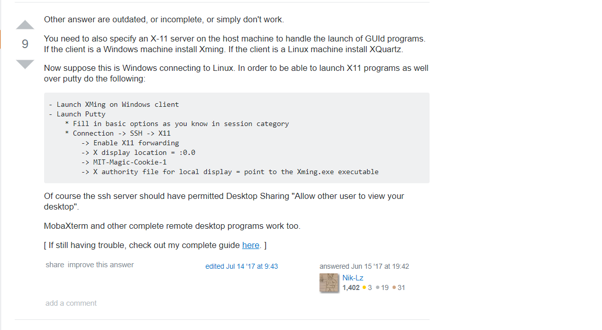

NANA1003 (spring 2025)
KEMS401 (autumn 2021)
lectures
KEMS4170 (spring 2021)
A. Szabo, N. Ostlund, Modern Quantum Chemistry
Hand outs
Lecture slides
- slides_9_4_2021.pdf
- slides_28_4_2021.pdf
- slides_3_5_2021.pdf
- slides_5_5_2021.pdf
- slides_12_5_2021.pdf
Exercises
Note, in order to use PuTTY for connecting to Puck, please check :|  |
srun -n1 -t01:00:00 --pty $SHELL
KEMS4180 (spring 2020)
F. Mandl, Statistical Physics: Chapter 1, 2, 4, 5, 7, 9,11T. Hill, Introduction to statistical thermodynamics: chapter 11
P. F. Barbara, T. J. Meyer and Mark. A. Ratner, Contemporary Issues in Electron Transfer research, J. Phys. Chem. 1996, 100, 13148-13168
- homework1.pdf; solutions1.pdf
- homework2.pdf; solutions2.pdf
- homework3.pdf; solutions3.pdf
- no homework4!
- homework5.pdf; solutions5.pdf
- no homework6!
- homework7.pdf; solutions7.pdf
- steam engine demo
KEMS4170 (spring 2019)
A. Szabo, N. Ostlund, Modern Quantum Chemistry
Hand outs
Lecture slides
- slides_4_4_2019.pdf
- slides_9_4_2019.pdf
- slides_11_4_2019.pdf
- slides_23_4_2019.pdf
- slides_30_4_2019.pdf
- slides_2_5_2019.pdf
Exercises
Note, in order to use PuTTY for connecting to Puck, please check :srun -n1 -t01:00:00 --pty $SHELL
Summerschool 2017: Nano1
reading material
Lectures
- Lecture1_NMR-theory.pptx.pdf
- Lecture2_Protein-NMR.pptx.pdf
- Lecture3-electrostatics.ppt.pdf
- Lecture4-pKa-IDP.pptx.pdf
- constant_pH_MD.pdf
Demos
- Demo-07-08.pdf
- Demo-08-08.pdf
- IR_practical.pdf
Link to spreadsheet - Tutorial-pepK alc.pdf
- Question-about-NMR-studies.pdf
Exercises KEMS456 (autumn 2014)
Fitting atomic charges in a two-stage RESP procedure
PDF files lecture presentations KEMS413 (spring 2013)
Exercises KEMS413 (spring 2013)
assignments
- Proton Affinity of Uracil
- Basicity and Nucleophilicity of Carboxylate lone pairs
- Isomerization of substituted benzenes to Dewar benzene isomers
- MCSCF study of S1 and S2 photochemical reactions of Benzene
- new benzene isomer
- CH5++
- CH+5: The neverending story
- Dissociation of Formic acid
- SCF and CI studies on ground state of water molecule
- Azulene